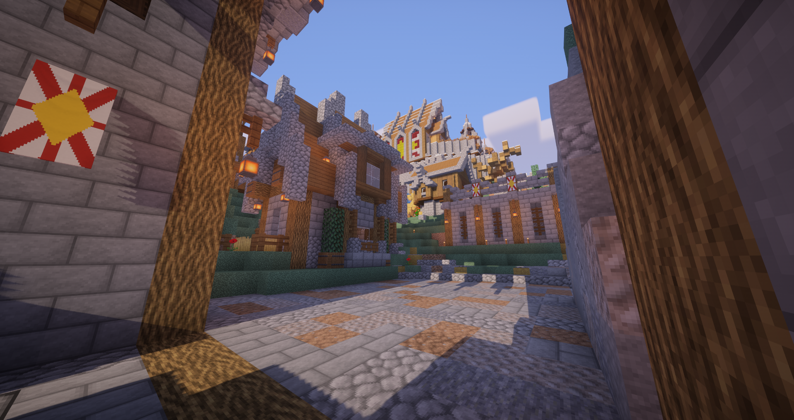
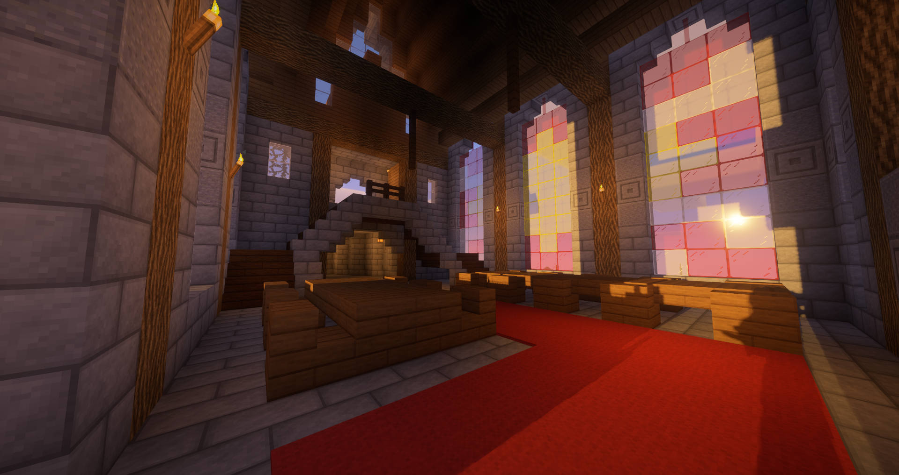
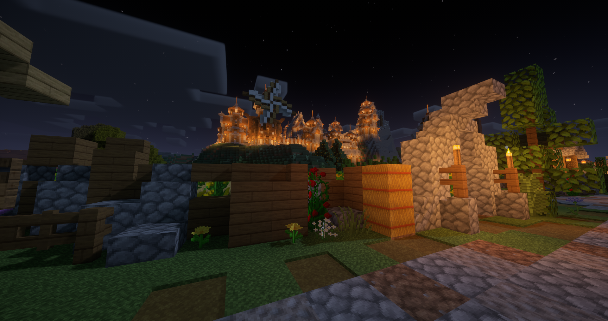

Highlights of the World
a few screenshots to give you a feel for the world
Surifell

A view of the front gate of Surifell

A view of the side gate of Surifell during the day

A view out of the Great Hall of Surifell at dusk

A full short of Surifell from a road outside its walls